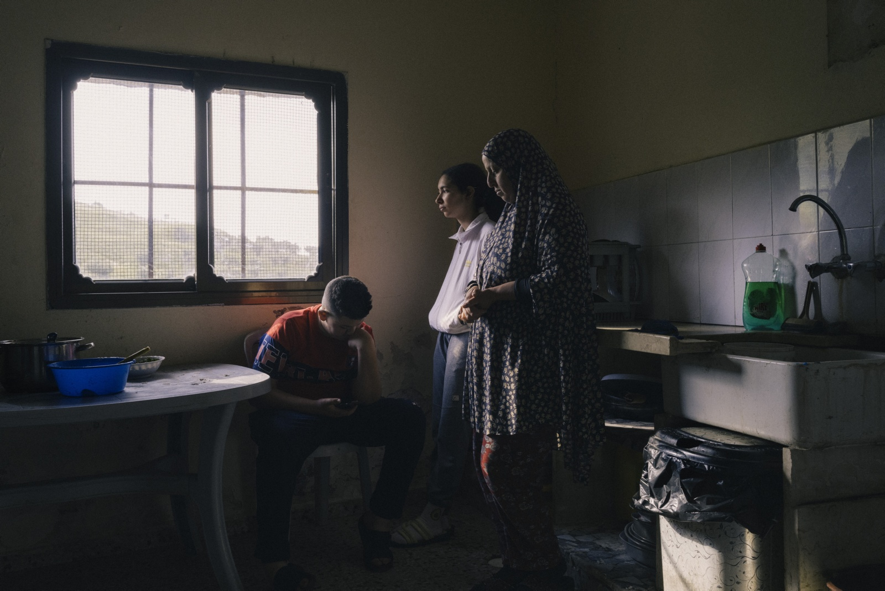
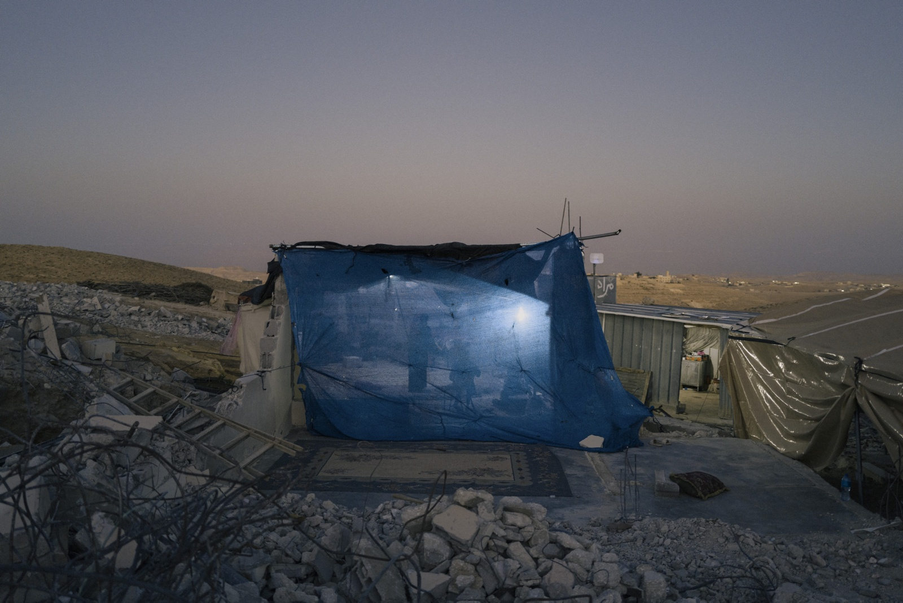
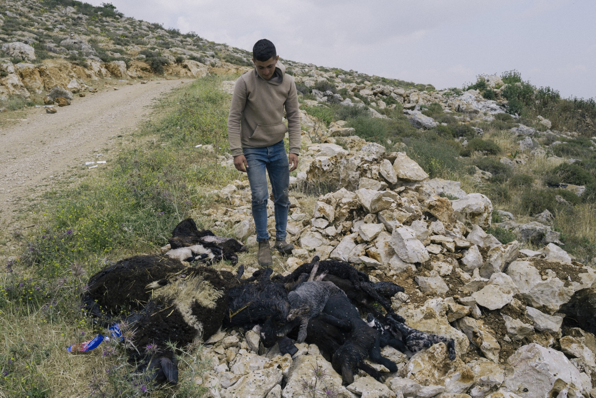

Qaryut, Palestine, West Bank - April 4, 2024: Sabry Rateb, 52,
enters a greenhouse that was attacked and damaged by settlers in
several occasions. The village of Qaryut have been attacked
frequently by settlers. The nearby settlement of Shiloh is expanding
at speed, recently the settlers took over the villageÄôs freshwater
spring Äî a location that Palestinian villagers said that they had
been shot at for trying to approach. (Photo by Lorenzo Tugnoli/ The
Washington Post/ Contrasto)

Yanun al-Fauqa, Palestine, West Bank - April 6, 2024: Mina, daughter
of Adnan Abu Haniyeh takes care of the family horse, her house is
bordering ItamarÕs Farm and most her family land has been made
inaccessible by the expansion of this outpost. The village of Yanun
and the nearby areas of Yanun al-Fauqa have been subject of frequent
settlers attacks. The outpost of ItamarÕs Farm, overlooking land of
Yanun village is quickly expanding. (Photo by Lorenzo Tugnoli/ The
Washington Post/ Contrasto)

Text Slide 3Burin, Palestine, West Bank - April 6, 2024: The village
of Burin have been almost completely encircled by settlements. The
Soufan family lives near the border of one of the settlements. The
family is harassed daily by settlers and was forced to build high
walls and installed barbed wire for protection. (Photo by Lorenzo
Tugnoli/ The Washington Post/ Contrasto)

Shilo settlement, Palestine, West Bank - April 9, 2024: Settlers
trains for quick response to security threats in the settlement of
Shilo. (Photo by Lorenzo Tugnoli/ The Washington Post/ Contrasto)

Shiloh settlement, Palestine, West Bank - April 9, 2024: A settler
opens the window or her house under construction, Ahiya outpost of
Shiloh settlement is in the process of being legalised. (Photo by
Lorenzo Tugnoli/ The Washington Post/ Contrasto)

Umm al-Kheir, Palestine, West Bank - July 8, 2024: The family of
Yasser Al-Hathaleen gathers in the evening in the wreckage of one of
the houses that was demolished. Palestinian residents were not
allowed to enter their homes to recover their belongings before
Israeli authorities carried out a demolition order on June 26. Umm
al-Kheir is situated in close proximity to the settlement of Carmel.
The residents of Umm al-Kheir are descendants of refugees who were
expelled in 1948 from an area to the south that now is part of
Israel. (Photo by Lorenzo Tugnoli/ The Washington Post/ Contrasto)

Sawiya, Palestine, West Bank - October 27, 2023: The funeral of
Bilal Saleh, a Palestinian man killed by settlers. Bilal was killed
while picking olives from his land. A scuffle among Palestinians
broke out during the funeral because some of the attendants were
waving a Hamas flag while most of the villagers were agains it.
(Photo by Lorenzo Tugnoli/ The Washington Post/ Contrasto)

Havat Gilad settlement, Palestine, West Bank - December 10, 2023:
Children play with wooden guns outside a house in Havat Gilad
settlement in the Occupied West Bank. (Photo by Lorenzo Tugnoli/ The
Washington Post/ Contrasto)

Hebron, Palestine, West Bank - February 20, 2024: Palestinian stand
near a passage that was recently blocked with a fence and barbed
wire in Jaber neighbourhood. The main road is closed to Palestinian
cars and only available to be used by settlers. Since the start of
the war between Hamas and Israel, Palestinians in the West Bank have
to live with increasing security measures. New checkpoints and
barriers have made life harder for civilians. (Photo by Lorenzo
Tugnoli/ The Washington Post/ Contrasto)

Al-Mughayyir, Palestine, West Bank - April 15, 2024: A farmer stands
near a pile of dead sheeps outside the village. The sheeps, mostly
lambs, where slaughtered by settlers during a major attack to the
village in April. The village was attacked by hundreds of settlers
for two consecutive days. Palestinian Jehad Abu Alia was killed and
25 others were wounded in the attack. An unprecedented number of
settlers attacks to Palestinian villages took place in April after a
young settler went missing in the West Bank. (Photo by Lorenzo
Tugnoli/ The Washington Post/ Contrasto)